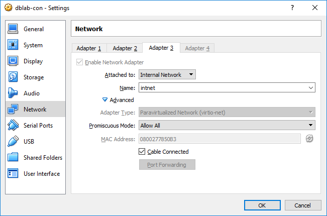

Multi-Node OpenStack Installation Using VirtualBox
There are multiple steps to do this. We will use the dlab-golden-image.vmdk
as the basis of our deployment. For additional information on how to
use the golden-image for a single all-in-one deployment of OpenStack
please see the dlab-vm
extra-credit page. You should master the dlab-vm lab before attempting
this lab, but you should read the instructions in this lab first, so
after doing the dlab-vm lab you can just proceed to step 3 of this lab.
For a multi-node deployment our strategy is as follows:
- Prepare the golden-image for a multi-node setup by making some simple modification.
- Power-off and save the new image
- Use it as a backing-image to create new VMs. This is done by creating a linked-clone in VirtualBox
- Create one controller VM, and at least one compute VM - all of which are linked-clones of the golden-image
- Start the controller-vm and proceed to complete the os200-labs - you can skip lab 10 if you like.
At the end of this step you will have a working OpenStack all-in-one
installation. The horizon admin page shows a single hypervisor - same
as your controller node.
- Now we can add any number of compute nodes - each being a
linked-clone of the golden-image VM. Setting up a compute node is
relatively fast - see below for additional information.
Step 1: Prepare the golden-image
- Follow the instructions in the dlab-vm
extra-credit to create our golden-image VM, but prior to booting the VM
make sure to enable Promiscous mode on Adapter 3 (VM's eth2). This is
necessary if our private/data network is using VLAN. You also have a
choice of using the intnet or the third host-only network:

- Boot your VM and login as stack user. "sudo -i" to become root.
- The standard golden-image uses "dummy" networks in the cloud for
eth1 and eth2. In order to create a multi-node cluster we must make
eth1 and eth2 real interfaces. This is easily done by moving
/etc/network/if-up.d/dummy to another directory and creating
/etc/network/interfaces.d/eth1.cfg and
/etc/network/interfaces.d/eth2.cfg with the same IP settings specified
in /etc/network/if-up.d/dummy - so better to not remove dummy
altogether. Sample eth1.cfg and eth2.cfg may look like this:
# cat eth1.cfg
--------------
auto eth1
iface eth1 inet static
address 172.30.1.1/24
# cat eth2.cfg
--------------
auto eth2
iface eth2 inet static
address 192.168.1.1/24
- Reboot your VM to make sure all network settings are effective. Login and check configuration of eth0, eth1, and eth2.
Try pinging eth0 and eth1 from your host. It should work if your
host-only network settings matches the configuration of eth0 and eth1.
- Type "sudo shutdown -h now" in your VM console to do a graceful shutdown of the VM.
- In the VirtualBox console select your VM, on the top-right corner
select "Snapshots". Then right-click "Current State" and select "Take
Snapshot".
Name it something like "dlab-backing-image".
Step 2: Setup the OpenStack Controller
Create the Controller VM:
- In the Snapshots, righ-click the "dlab-backing-image" and select "Clone".
- Call it "dlab-controller" and click "Reinitialize the MAC
address of all network cards". This is necessary for each VM to have
distinct NICs.
- Click "Next" and select "Linked clone". This will save
disk-space. You are still limited by memory, so if you have plenty of
disk space you can do a "Full clone".
Start the controller-vm and proceed to complete the os200-labs with the following caveats:
- You can safely skip lab-10 (heat) because you can always add it later.
- You can also skip lab-9 (horizon) because you can add that later too, but horizon comes in handy when we want to check the state of our multi-node installation.
- In a multi-node install all nodes must agree on time, so in section 2.1
make sure the clock on the controller has a good defualt. NTP
configuration for a cloud controller should include controller
falling back to local clock in case time servers are unavailable.If
"ntpq --numeric --peers" does not return sane values then add
the following lines to /etc/ntp.conf (detailed instructions here):
server 127.127.1.0 # local clock
fudge 127.127.1.0 stratum 10
- Restart ntop using "sudo sysctl reload ntp.service". Test the new ntp configuration by running "ntpq --numeric --peers"
- In section 6.2 steps 5 through 8 we create br-eth2 and correctly connect it to eth2.
However, we do not transfer the ip address of eth2 to br-eth2, so the
configuration is incomplete and would not work in a multi-node setup. For an example please see section 6.3 steps 18 through 20 for the setup of br-ex. We must do the same for br-eth2 - as follows:
- Modify /etc/network/interfaces.d/eth2.cfg as follows:
auto eth2
iface eth2 inet manual
- Create /etc/network/interfaces.d/br-eth2.cfg as follows:
auto br-eth2
iface br-eth2 inet static
address 192.168.1.1/24
- ip addr del 192.168.1.1/24 dev eth2
- ip addr add 192.168.1.1/24 dev br-eth2
- There are no other changes to the controller setup. Complete the labs and test your controller to make sure it works.
Step 3: Setup an OpenStack Compute
Create a Compute node VM:
- In the VirtualBox console select the powered off golden-image VM.
In the Snapshots, righ-click the "dlab-backing-image" and select
"Clone".
- Call it "dlab-compute-1" and click "Reinitialize the MAC
address of all network cards". This is necessary for each VM to have
distinct NICs.
- Click "Next" and select "Linked clone". This will save
disk-space. You are still limited by memory, so if you have plenty of
disk space you can do a "Full clone"
Start the dlab-compute-1 VM and follow the below instructions to create your first compute node
Setting up a compute node is relatively fast and easy - we must install
ntp service, neutron L2 agent, and nova-compute and associated
services. The base instructions for these are in OS200 lab section 2.1,
section 6.2, and section 8.4 - with some modifcations to allow for this
being a compute node. Here are the steps:
- Change the hostname in /etc/hostname and /etc/hosts to dlab-c1
- Change the ip address of eth2 - as this is a static ip addresses
- ifdown eth1 as it's not needed and change eth1.cfg to be manual
- In a multi-node install all nodes must agree on time, so follow the instructions in section 2.1but
make sure the clock on the compute node uses the ntp server on
your controller as a time source. You can accomplish that by have the
line "server 172.15.0.2" in your /etc/ntp.conf. 172.15.0.2 is the ip
address of eth0 on my controller - use your controller's ip address.
Sample result should look like this - but must change the IP address to your
controller ip address:
-
# ntpq --numeric --peers
remote
refid st t when poll reach
delay offset jitter
==============================================================================
172.15.0.2
.INIT. 16
- - 1024 0
0.000 0.000 0.000
- Follow section 6.2 steps 1 to 9 and additionally do step 5 in controller configuration to make sure br-eth2 works:
- Modify /etc/network/interfaces.d/eth2.cfg as follows:
auto eth2
iface eth2 inet manual
- Create /etc/network/interfaces.d/br-eth2.cfg as follows:
auto br-eth2
iface br-eth2 inet static
address 192.168.1.2/24
- ip addr del 192.168.1.2/24 dev eth2
- ip addr add 192.168.1.2/24 dev br-eth2
- Before doing step 10 we must do some changes to /etc/neutron/neutron.conf in similar to section 5.1.4 step 9, but just the [oslo_messaging_rabbit]. Set:
- [DEFAULT]
...
rpc_backend = rabbit
- [oslo_messaging_rabbit]
...
rabbit_host = <mgmt IP of the controller - not compute node>
rabbit_userid = guest
rabbit_password = bunny
- Make all the changes in section 5.1.4 step 10
- [securitygroup]
enable_security_group = True
firewall_driver = neutron.agent.linux.iptables_firewall.OVSHybridIptablesFirewallDriver
- Proceed to section 8.4 and do all the steps 1 through 8
I think we are done.
Launch a few instances and test.